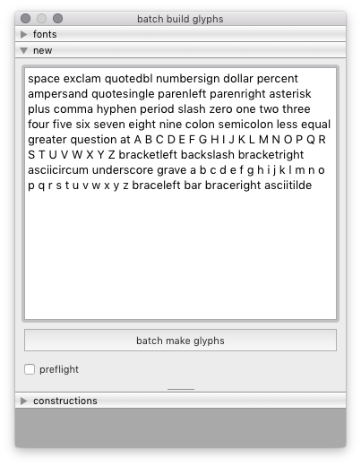
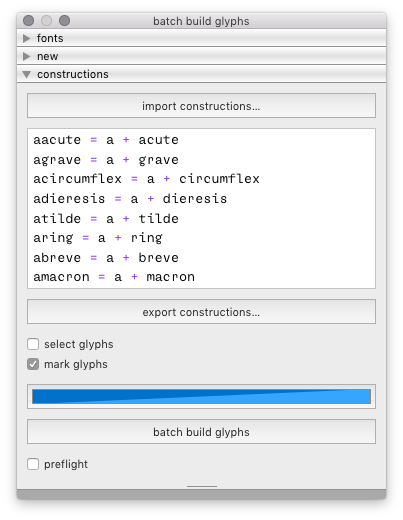

build¶
The Build tool is a batch tool to create new glyphs in a set of target fonts. It can be used to create new empty glyphs, and to build new glyphs from components using Glyph Construction syntax.
 fonts
Use the fonts panel to select on which fonts to apply the actions.
new
Use the new panel to create new empty glyphs from a list of glyph names.
constructions
Use the constructions panel to build new glyphs from a list of glyph constructions.
-
class
BatchBuildGlyphsDialog[source]¶ Bases:
hTools3.dialogs.batch.base.BatchDialogBaseA dialog to build new glyphs in batch in selected fonts.
from hTools3.dialogs.batch.Build import BatchBuildDialog BatchBuildDialog()
-
title= 'batch build glyphs'¶
-
key= 'com.hipertipo.hTools3.dialogs.batch.build'¶
-
importGlyphConstructions(filePath)[source]¶ Import glyph constructions from a .glyphConstruction file.
-
exportGlyphConstructions(filePath)[source]¶ Export glyph constructions to a .glyphConstruction file.
-